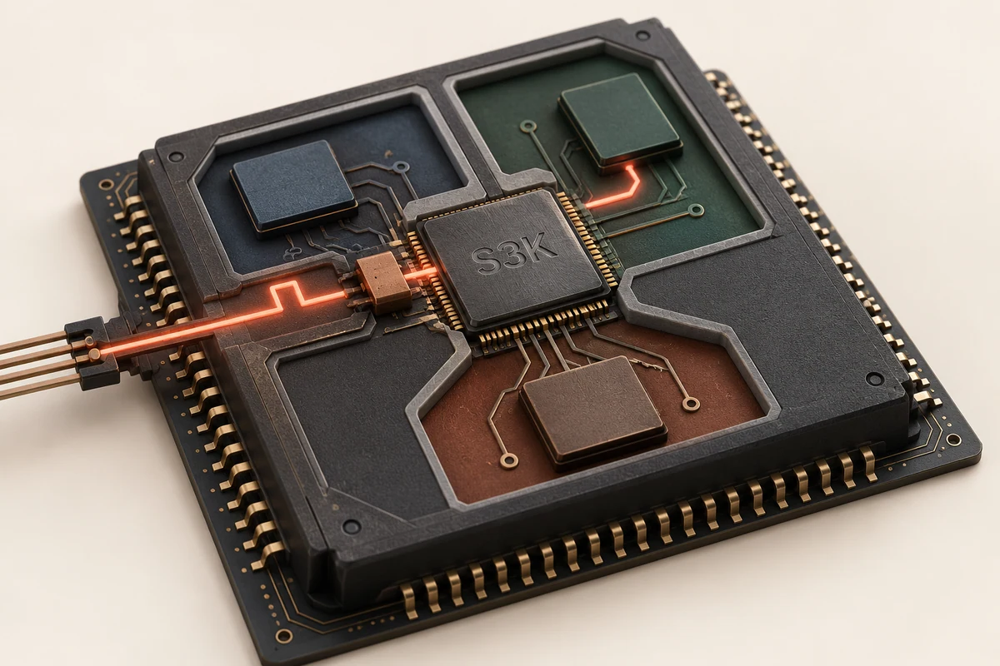
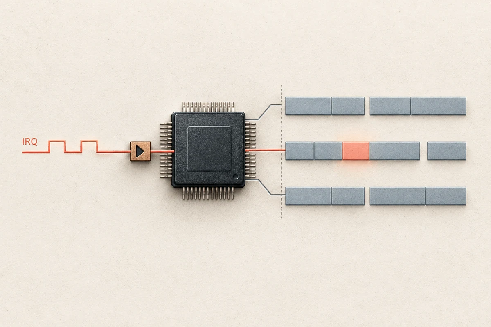
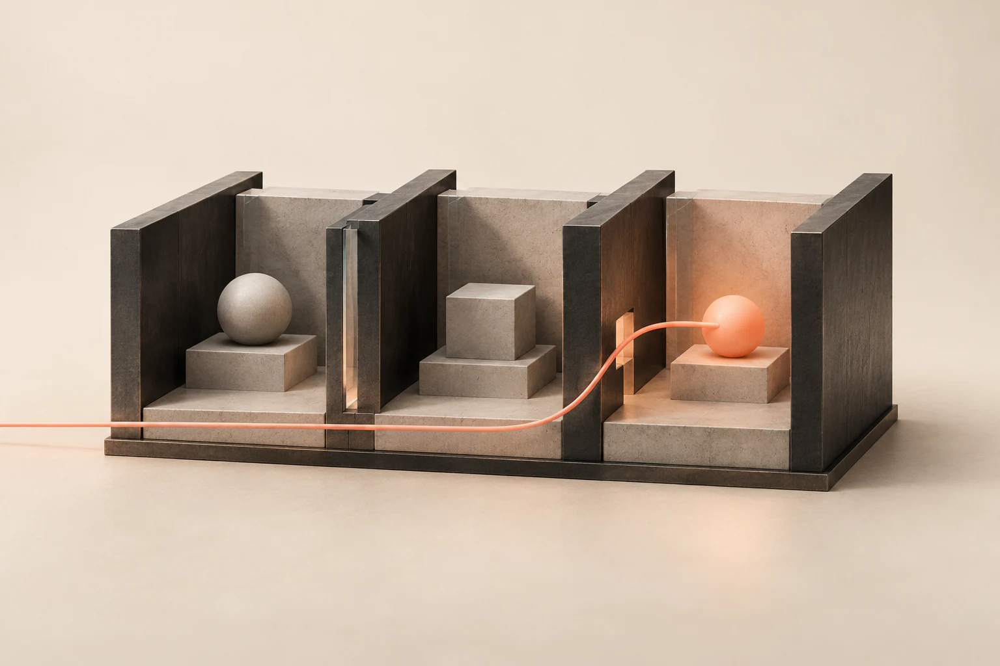

Selected A
Kernel and interrupt routing
A processor, separated execution regions, and one controlled signal route.
Open full image ↗S3K Interrupt Capabilities
Kernel hardware, protected execution, and interrupt dispatch. Compare the complete artwork with the crop used in the selected-project cards.

Selected A
A processor, separated execution regions, and one controlled signal route.
Open full image ↗Draft B
The kernel and isolated user processes shown as layers, with an interrupt crossing one interface.
Open full image ↗
Draft C
A graphic direction that gives the interrupt event and its destination the strongest emphasis.
Open full image ↗